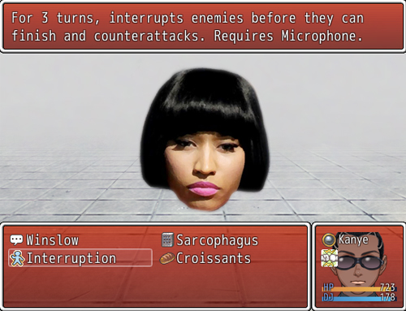

Kanye Quest 3030 is a role-playing video game published on July 22, 2013 for Windows PCs. The game was unlicensed and unauthorised by musical artist Kanye West. It was created in RPG Maker by a user named "Phenix". The game describes itself as a hip hop-themed science fiction 2D role-playing game.
In the year 2010, Kanye West takes out his garbage before tripping and falling into a portal, which brings him to the year 3030. The United States has become a dystopian society ruled by a clone of rapper Lil B claiming himself to be a god. A prophecy exists, claiming that Kanye West would return one day and overthrow Lil B. With this knowledge, Kanye West travels this dystopian society and teams up with other musicians such as Jay-Z, 2Pac and RZA to fight to free America. Along the way they are challenged by other musicians such as Eminem, Nicki Minaj, De La Soul and LL Cool J. Upon completing the game Kanye West declares himself the one true "based" God and returns to 2010 where he puts away the trash.
The game was played similarly to the Pokémon series. Each rapper has their own special moves and abilities based on in-jokes within the rapping community. The player is challenged by different rappers wandering the streets and must defeat them to level up and progress in the game.
